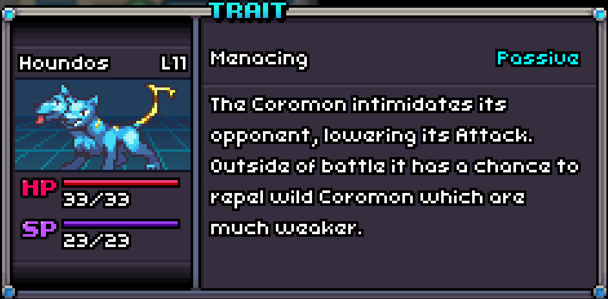

A potent Houndos with Menacing!
Menacing
Menacing is a Passive Trait that lowers the Attack of the opposing Coromon by one stage when the Coromon enters the battle field.
This effect can be stacked by sending out the same Coromon multiple times.
Outside of battle, if the Coromon is in the first slot, it will have a chance to repel wild Coromon that are lower than its level.